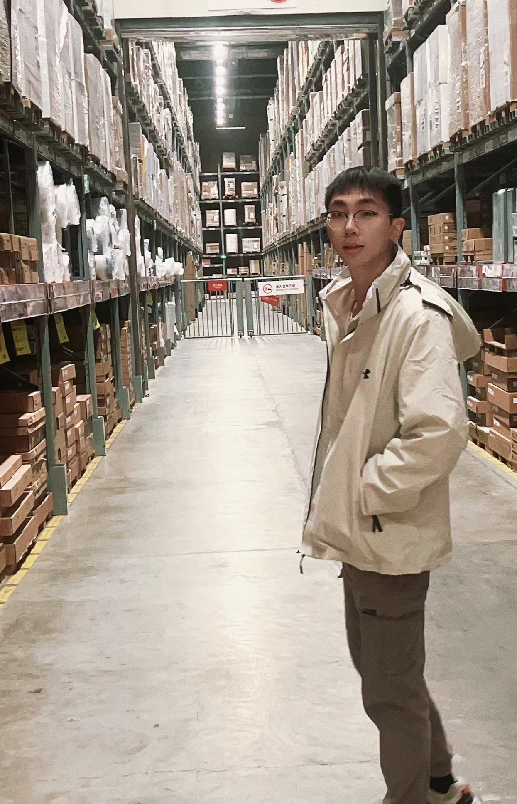
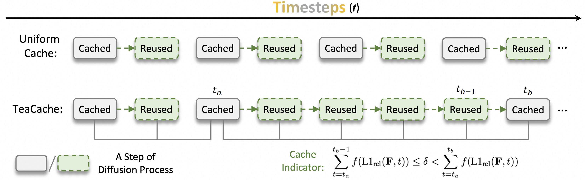

Feng LiuPh.D. candidateRoom 260, Academy 2 Building
|
 |
Biography
I am a Ph.D. candidate in LAMP (Learning And Machine Perception Laboratory) in the University of Chinese Academy of Sciences, advised by Prof. Fang Wan and Prof. Qixiang Ye. I earned a B.E. from the Harbin Institute of Technology, Shenzhen in June 2020.
My research interests revolve around Visual Perception, Visual Generation and Multi-modal Understanding.
I am expected to graduate in 2025, and I am actively looking for full-time jobs related to the above topics.
Experience
Research Intern, 3D Object Detection at Megvii Inc, 2023.04-2024.01
Research Intern, Video Generation at Alibaba TongYi Vision Intelligence Lab, 2024.07-
Publications & Preprints
(* Equal Contribution)|  | Timestep Embedding Tells: It's Time to Cache for Video Diffusion Model
Feng Liu, Shiwei Zhang, Xiaofeng Wang, Yujie Wei, Haonan Qiu, Yuzhong Zhao, Yingya Zhang, Qixiang Ye, Fang Wan 2025 IEEE/CVF Conference on Computer Vision and Pattern Recognition (CVPR 2025) [Paper] [Project] |
| DynRefer: Delving into Region-level Multi-modality Tasks via Dynamic Resolution
Yuzhong Zhao*, Feng Liu*, Yue Liu, Mingxiang Liao, Chen Gong, Qixiang Ye, Fang Wan 2025 IEEE/CVF Conference on Computer Vision and Pattern Recognition (CVPR 2025) [Paper] [Code] |
|
 |
Ray Denoising: Depth-aware Hard Negative Sampling for Multi-view 3D Object Detection
Feng Liu, Tengteng Huang, Qianjing Zhang, Haotian Yao, Chi Zhang, Fang Wan, Qixiang Ye, Yanzhao Zhou 2024 European Conference on Computer Vision (ECCV 2024) [Paper] [Code] |
| Integrally Migrating Pre-trained Transformer Encoder-decoders for Visual Object Detection
Feng Liu*, Xiaosong Zhang*, Zhiliang Peng, Zonghao Guo, Fang Wan, Xiangyang Ji, Qixiang Ye 2023 IEEE/CVF International Conference on Computer Vision (ICCV 2023) [Paper] [Code] |
|
 |
Domain Contrast for Domain Adaptive Object Detection
Feng Liu, Xiaosong Zhang, Fang Wan, Xiangyang Ji, Qixiang Ye 2021 IEEE Transactions on Circuits and Systems for Video Technology (T-CSVT 2021) [Paper] [Code] |
 |
Beyond Max-Margin: Class Margin Equilibrium for Few-shot Object Detection
Bohao Li, Boyu Yang, Chang Liu, Feng Liu, Rongrong Ji, Qixiang Ye 2021 IEEE/CVF Conference on Computer Vision and Pattern Recognition (CVPR 2021) [Paper] [Code] |
 |
EgoVid-5M: A Large-Scale Video-Action Dataset for Egocentric Video Generation
Xiaofeng Wang, Kang Zhao, Feng Liu, Jiayu Wang, Guosheng Zhao, Xiaoyi Bao, Zheng Zhu, Yingya Zhang, Xingang Wang arXiv, 2024 [Paper] [Project] [Data] |
| DreamVideo-2: Zero-Shot Subject-Driven Video Customization with Precise Motion Control
Yujie Wei, Shiwei Zhang, Hangjie Yuan, Xiang Wang, Haonan Qiu, Rui Zhao, Yutong Feng, Feng Liu, Zhizhong Huang, Jiaxin Ye, Yingya Zhang, Hongming Shan arXiv, 2024 [Paper] [Project] |